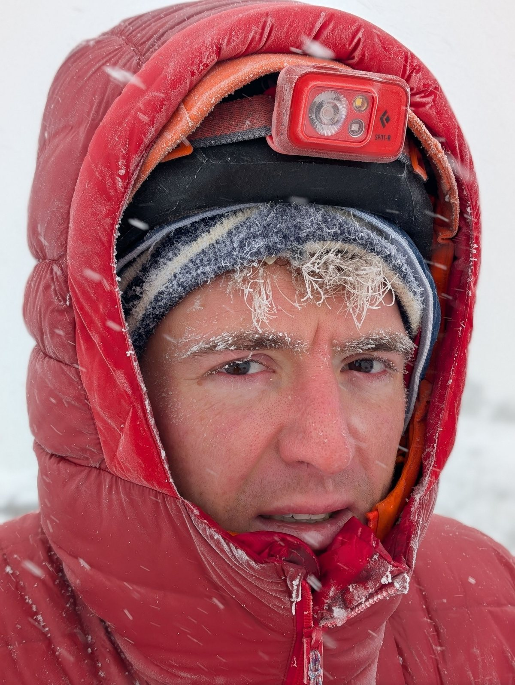

1. One big coat instead of layers
Mt. Yotei, Hokkaido, February 2026.
Day one, snowing, cold, wind up. One of our group was wearing a single very thick coat rather than layers. Within an hour of skinning he was overheating, and there was nothing he could do about it except unzip.
So he sweated. Then the inside of the coat got wet. Then we stopped and he got cold, fast. Then he worked harder to warm up, and sweated more..... There is no way out of that loop on the hill. You cannot dry a soaked insulating layer at minus whatever in the wind.
Why it is a gear mistake and not a fitness one: he was not unfit. He was carrying the wrong system. A thin base, a light active layer and a belay jacket in the pack would have given him the same warmth with the ability to dump heat on the climb. That is the entire point of layers, and it is the most commonly ignored bit of advice in the outdoors.
2. Kit you have not tested since last season
Same day, same person.
His splitboard bindings were already failing before we left the car park. It was a pretty bad quality setup and it was not holding properly, so every single transition cost him time and energy he did not have to spare.
Combine that with the coat and with a genuine overestimate of what he could do that day, and the three things together turned us around a little above the tree line. Not the weather. Us.
Your living room floor is the right place to find out your bindings are broken. The car park is the wrong one.
He made the right call the next morning and sat the summit day out. We got up. Five of us stood on top of Yotei because one person correctly assessed his own kit and his own condition, twenty-four hours too late for the first day but exactly in time for the second.
3. The summit-night item left at home
Kilimanjaro, January 2026.
Nancy was on the summit push with us, dealing with the altitude, and she had left her heavy gloves behind. Her hands started going. Somewhere around halfway up, she turned around.
She was right to. But look at the shape of that: months of planning, an international flight, seven days on the mountain, and the thing that took the summit away was a pair of gloves in a drawer in another country...
The category that matters: on a midnight summit push there is a short list of items you cannot borrow, cannot improvise and cannot do without. Heavy gloves. A working head torch and spare batteries. A proper hat. Goggles if it is windy. Everything else on the mountain has some workaround. These do not.
Pack those separately, check them separately, and check them again at high camp before you sleep.
4. Gear that is right for warmth and wrong for the job
Matterhorn, Hörnli Ridge, 24 August 2026.

There had been a frost overnight, and the fixed ropes on the upper ridge were iced. I was wearing two pairs of gloves, which was correct for the temperature and completely wrong for gripping a frozen rope. Every grab slid back down.
That was the hardest part of the whole climb, and I got through it on stubbornness rather than technique. I am not going to write it up as anything more elegant than that.
The lesson is a real trade-off, not a purchase. Warmth and grip pull against each other, and on a cold morning on fixed ropes you are going to be wrong in one direction or the other. What I would do differently is think about it in advance and carry one thinner pair I can switch to for a specific section, instead of finding out mid-move that my hands have no purchase.
5. Equipped for the trip you booked, not the route you are on
Cosmiques arête, Chamonix, September 2015.
My climbing partner that week, a young woman from Paris, was poorly equipped for the ground we were actually on. The Cosmiques arête is a mixed rock, ice and snow route with serious exposure, and it was the first time either of us had done anything like it. At one point she came off a short rock step and landed on her helmet.
Two things worth saying about that. First, the helmet did its job, and that is the ENTIRE argument for helmets. Second, our guide Michel had her up, clipped and moving again inside about fifteen seconds, talking the whole time, giving the fall no room to turn into fear. Best thing I saw all week!
But the underlying problem was that she had packed for "a guided week in Chamonix" and we were on an exposed mixed route. Those are different kit lists. Read the actual route description, not the trip title. If you cannot get one, ask the guide directly what the hardest section requires.
What do I check before every trip?
- Wear the full layering system for a hard hour at home or on a local hill. Not a shop try-on. A sweat test.
- Put every piece of hardware together on the floor. Bindings, skins, crampons on the actual boots you are bringing, harness, head torch on with fresh batteries. Anything that has been in a bag since last season gets assembled before it gets packed.
- Separate the summit-night bag. Heavy gloves, hat, torch, spare batteries, goggles. That bag gets checked on its own, twice.
- Ask what the hardest 200 metres of the route needs and pack for that, not for the average of the week.
- Carry one redundancy for hands and one for light. They are small, they are light, and they are the two failures that reliably end days.
You will notice there is not a single brand name in this post. That is deliberate, and it is not a dig at anyone: every failure above was a planning failure wearing gear-shaped clothes. A proper kit list by discipline is something I want to publish, and I will, but I would rather put the failures up first. They are more useful and they cost nothing to fix.
If you are heading out this season and want a second pair of eyes on your list, send it over. Happy to look!